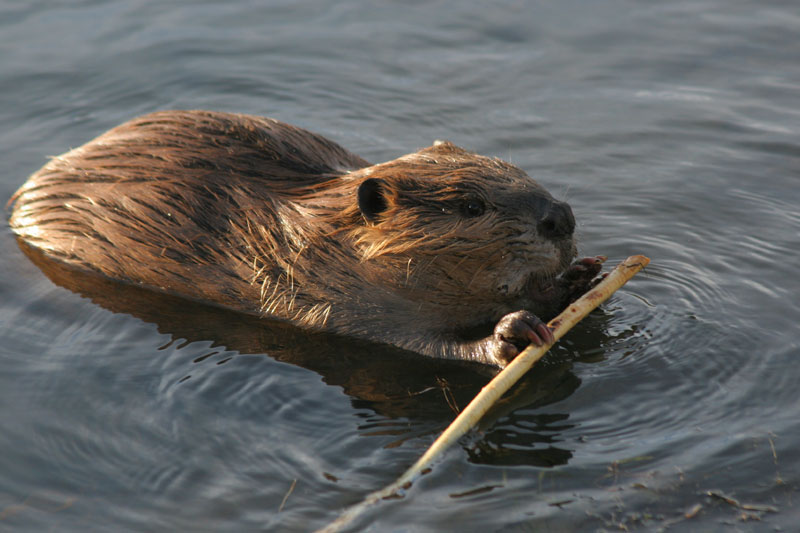

Especies exóticas invasoras en Argentina
(Esta parte está hecha con Grid)
Castor canadiense (Castor canadensis)
En el año 1946 el Ministerio de Marina de la República Argentina a cargo de Fidel Anadon contrató a Tomb Lamb, un piloto de avioneta de Canadá para comprarle 50 castores que quería transladar a Tierra del Fuego. El objetivo de esta introducción era enriquecer la fauna local y promover la producción de cuero y pieles. Lamb sólo consiguió 20 castores que fueron liberados en noviembre de 1946, además se determinó por ley que por al menos 35 años estaba prohibido cazarlos.
En la actualidad unas 5 millones de hectáreas están completamente ocupadas por castores, lo que trae innumerables problemas. Estos animales construyen diques con barro y palos que cambian el curso y nivel de los ríos; disminuyen la velocidad y presión de las corrientes; expanden áreas de suelos inundados y aumentan la retención de sedimentos. Alteran la estructura y el funcionamiento del ecosistema y producen efectos que pueden perdurar durante siglos. Generan cambios en la temperatura y en el contenido de nutrientes del agua, afectando especies de peces nativas. Modifican microclimas inundan áreas que antes no se inundaban, causando la muerte de árboles que tienen entre 250 y 300 años de edad; inundan bosques enteros que llevan a la asfixia de dichos árboles, que mueren y ya no vuelven a crecer. Esos sectores que antes eran bosques se transforman en pastizales.
En tan sólo un año un castor puede llegar a cortar hasta 200 árboles, ya que si no desgastan sus dientes estos pueden crecer hasta atravesarles el paladar. Además no hay osos ni lobos que se coman al castor, por lo que se reproducen sin límites. Se estima que el impacto de los castores en el ecosistema fueguino le genera al Estado pérdidas de 66 millones de dólares anualmente.
En resumen, en 1946 se liberan los primeros 20 castores; en 1962 los castores cruzan el Canal de Beagle, algo que no estaba planeado ya que se pensaba que los castores rechazarían el agua salada, sin embargo llegaron a la Isla Navarino. En 1981 la problemática en torno a la invasión de castores se hace notoria, es entonces cuando se permite la caza de castores.
En 1994 se detectan algunos focos de invasión en la parte chilena del continente, es decir fuera de la isla de Tierra del Fuego, donde lograron controlarlos. En 1999 se realizó un primer plan de manejo para intentar extraer unos 7000 castores al año y así mantener controlada la población. Este plan no funciono debido a la dificultad para acceder a los castores y solo fue posible extraer entre 3000 y 3500 castores por año.
A raíz de las dificultades antes mencionadas se comenzó a fomentar el uso de su piel, es decir la casería comercial. Además el gobierno empezó a pagar incentivos, pagando $25 por cada cola de castor. Sin embargo, la caza para el comercio de pieles implica un trabajo mucho más lento y minucioso con trampas para no dañar su pelaje. Además es algo que suele puede implementarse en invierno cuando el animal tiene el pelaje más llamativo, dado que en verano lo cambian por uno de pelo más corto que no tiene valor económico. Por otro lado, la piel de los castores introducidos en Argentina es de color marrón, mientras que la piel más utilizada para indumentaria es negra. Esto implica que debe teñirse, sumando un paso más a la cadena productiva. Sumado a eso, la sociedad comenzó a perder el interés por el uso de pieles. Por dichas razones la industria peletera no prosperó. En la búsqueda de una nueva solución se intentó incentivar el consumo de carne de castor, incluyéndola en diferentes menús típicos, algo que tampoco prosperó.

Ciervo Axis Axis
Es un mamífero propio de la India (Asia) que fue introducido en Argentina entre los años 1928 y 1930 en varias estancias de la provincia de Buenos Aires para ser utilizada como presa de caza. En particular por Aarón Anchorena, quien envió desde Uruguay un lote de ejemplares a Benjamín Muñíz Barreto para su estancia en Monte Veloz, en Magdalena, Buenos Aires. Al no tener depredadores naturales y encontrar abundancia de recursos alimenticiosEn este lugar el ciervo proliferó y se extendió rapidamente, al punto de ser declarado una plaga en dicha provincia.
En la actualidad en ciervo axis se disemina en al menos 13 provincias argentinas y en varias áreas protegidas del país, en donde genera daños en la corteza de los árboles con su cornamenta, erosiona el suelo y compite por las pasturas con otros animales nativos.
Actualmente hay un proyecto para intertar controlar la ppblación del ciervo axis en el Parque Nacional Palmar, en Entre Ríos, y en el Parque Nacional Iberá, en Corrientes. Sin embargo, estos proyectos solo logran mantener la pablación de ciervos constante, pero elevado de todos modos.
")